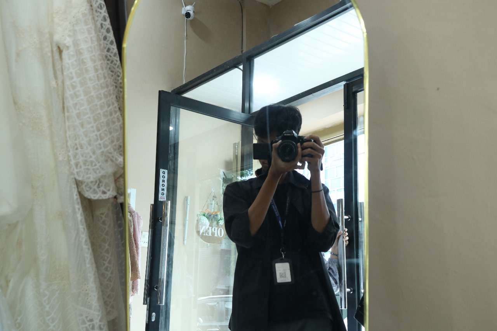
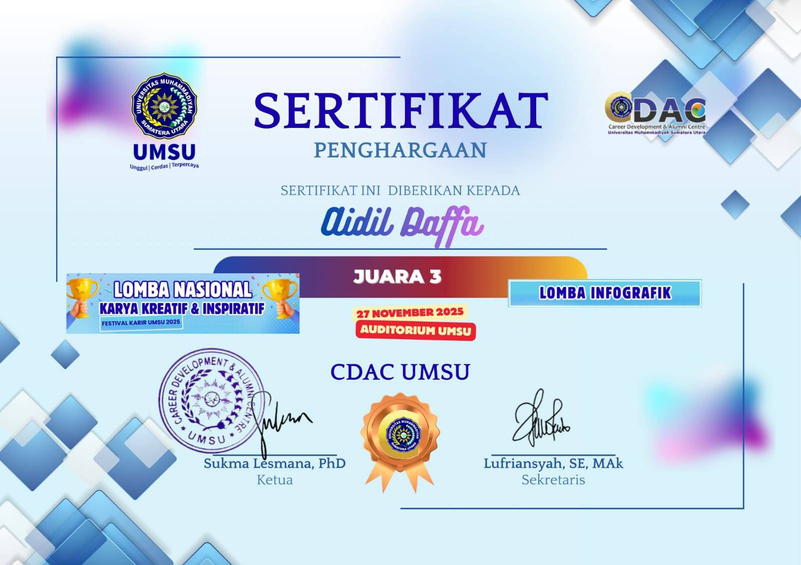
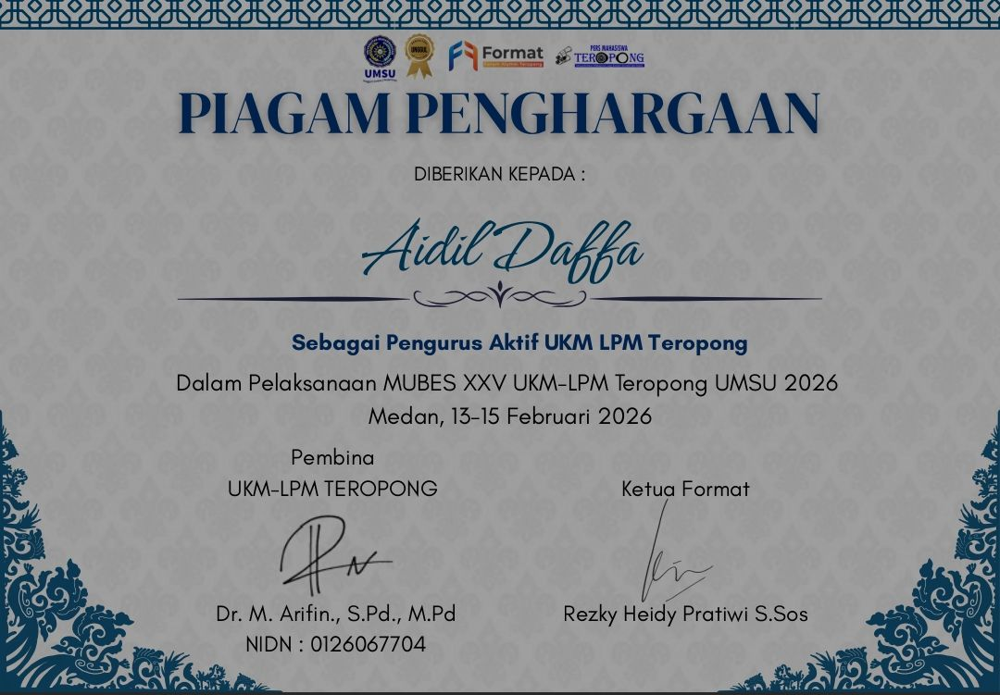
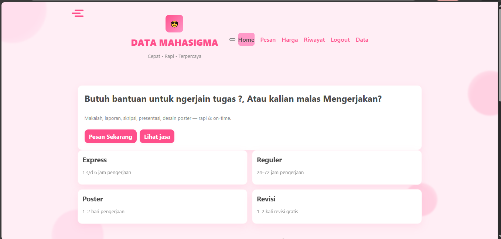
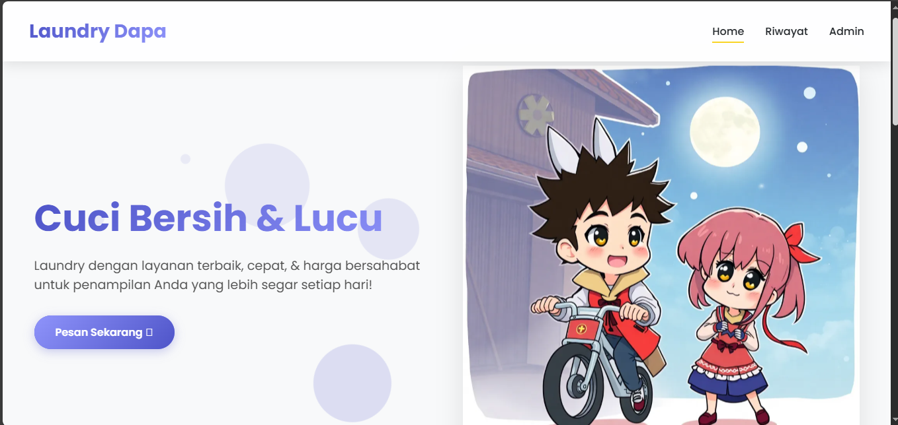

Mahasiswa Sistem Informasi & Kreator Digital.
Saya Aidil Daffa, mahasiswa di UMSU jurusan Sistem Informasi yang menggabungkan logika sistem informasi dengan estetika desain grafis dan ketajaman jurnalistik.

Sertifikasi Terbaru

Sertifikasi Juara 3 Infografis CDAC UMSU
Infografis CDAC UMSU

Sertifikat Aktif Berorganisasi
LPM Teropong UMSU
Hard Skills
Soft Skills
Pengalaman & Organisasi
HMJ HIMASI UMSU
Divisi MEDINFO (UNIT DESIGN GRAFIS)
Bertanggung jawab atas identitas visual organisasi, pembuatan konten media sosial, dan desain publikasi acara tahunan.
UKM LPM Teropong
Reporter & Tim Kreatif
Aktif dalam peliputan berita kampus, penulisan artikel jurnalistik, dan dokumentasi visual untuk platform media mahasiswa.
Showcase Project
Solusi digital yang dibangun dengan presisi.

Sistem Joki Tugas
Aplikasi berbasis web untuk mengelola Joki dan juga Tugas Mahasiswa yang dibuat dengan html dan css.
Source Code
Sistem laundry
Aplikasi berbasis web yang dikerjakan menggunakan html dan css sederhana.
Source Code